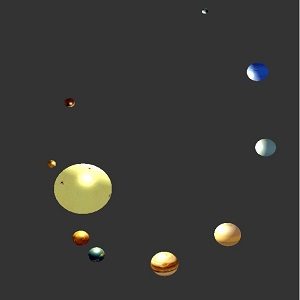

Dominic Romualdo

Dominic Romualdo
Student at California Polytechnic State Universtiy, San Luis Obispo
Project Summary
This project is a model of the Solar System. It uses hierarchical transforms to ensure the planets rotate around the Sun. The planets rotate in different speeds relative to each other. I wanted to do this project because I really like looking up at the stars and planets.
Controls
'w' key: Moves you forwards
's' key: Moves you backwards
'a' key: Moves you to the left
'd' key: Moves you to the right
Studying Computer Engineering
Member of Theta Chi, Zeta Phi chapter
Download Link